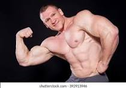
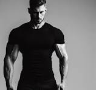

Lean Body Shape
Starting date, Oct 7, 2017

Embrace the journey of sculpting your body into a lean, mean machine Every drop of sweat shed in the pursuit of a lean physique is a testament to your dedication Transforming your body into a lean machine requires passion, patience, and a relentless pursuit of progress.
Bulk Body Shape
Starting date, Sep 2, 2017
"Embrace the iron, sculpt your physique, and forge the body you've always dreamed of! Every rep, every set, every drop of sweat is a testament to your dedication and resolve. With unwavering determination, you shape not just muscles but character. Embody the strength, embody the power, and let your relentless pursuit of excellence carve out the masterpiece that is your bulk body figure. Rise, train, conquer!".
V-shaped torsos
Starting date, Sep 20, 2017
V-shaped torsos one of the very attractive body shap, "Embrace the power of the V-shaped torso, a symbol of strength and aesthetics. Witness the sculpted perfection of a well-defined V-shaped physique. Crafting a V-shaped torso requires unwavering commitment and dedication The journey to a V-shaped torso is fueled by passion and relentless effort.